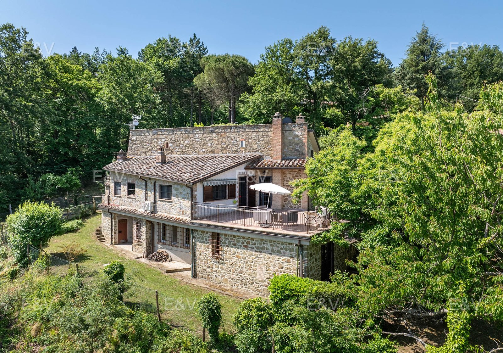

€525.000
Ponibbiale / Piegaro (near Panicale), Umbria
The only sub-€600k habitable stone house with a built private pool on this hunt. 2024 redo, terracotta and stone fireplaces, 1.3 ha, Trasimeno in the view. Marketed by Antonini as next to Panicale (Piegaro 3 km, Panicale 11 km).
E&V JSON-LD Offer InStock €525000, datePosted 2025-07-17, Ponibbiale hamlet of Piegaro, 8 rooms / 5 beds / 4 baths / ~270 m² / ~13,000 m², energy F, year 1980. Antonini page opened today as Casale Poggio Alta Vista, same €525.000, 300 m², 4 official beds + 2 attic rooms, year 1985, last renovation 2024, energy G, property id 70461 / 71308: https://www.antoniniepartners.com/estate_property/casale-poggio-alta-vista/ — treat as one house, two desks.